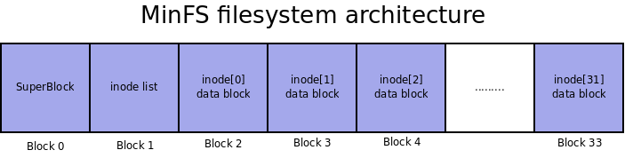

Laborator 9: Exerciții
Pentru desfășurarea laboratorului pornim de la arhiva de sarcini a laboratorului. Descărcăm și decomprimăm arhiva în directorul so2/ din directorul home al utilizatorului student de pe sistemul de bază (stația mjolnir):
student@mjolnir:~$ cd so2/ student@mjolnir:~/so2$ wget http://elf.cs.pub.ro/so2/res/laboratoare/lab09-tasks.zip student@mjolnir:~/so2$ unzip lab09-tasks.zip student@mjolnir:~/so2$ tree lab09-tasks
În cadrul directorului lab09-tasks/ se găsesc resursele necesare pentru dezvoltarea exercițiilor de mai jos: fișiere schelet de cod sursă, fișiere Makefile și Kbuild, scripturi și programe de test.
Vom dezvolta exercițiile pe sistemul fizic și apoi le vom testa pe mașina virtuală QEMU. După editarea și compilarea unui modul de kernel îl vom copia în directorul dedicat pentru mașina virtuală QEMU folosind o comandă de forma
student@mjolnir:~/so2$ cp /path/to/module.ko ~/so2/qemu-vm/fsimg/root/modules/
unde /path/to/module.ko este calea către fișierul obiect aferent modulului de kernel. Apoi vom porni, din directorul ~/so2/qemu-vm/ mașina virtuală QEMU folosind comanda
student@mjolnir:~/so2/qemu-vm$ make
După pornirea mașinii virtuale QEMU vom putea folosi comenzi în fereastra QEMU pentru a încărca și descărca modulul de kernel:
# insmod modules/module-name.ko # rmmod module/module-name
unde module-name este numele modulului de kernel.
Ctrl+Alt+t. Cele trei tab-uri de terminal îndeplinesc următoarele roluri:
- În primul tab de terminal dezvoltăm modulul de kernel: editare, compilare, copiere în directorul dedicat pentru mașina virtaulă QEMU. Lucrăm în directorul aferent rezultat în urma decomprimării arhivei de sarcini a laboratorului.
- În al doilea tab de terminal pornim mașina virtuală QEMU și apoi testăm modulul de kernel: încărcare/descărcare modul, rulare teste. Lucrăm în directorul aferent mașinii virtuale:
~/so2/qemu-vm/. - În al treilea tab de terminal pornim un server UDP care să primească mesajele de netconsole. Nu contează în ce director ne aflăm. Folosim comanda
student@mjolnir:~$ netcat -lup 6666
Atunci când primiți un val de erori și warning-uri, urmăriți prima eroare/warning și rezolvați-o pe aceea înainte de a vă apuca de celelalte erori.
[4p] myfs
Pentru exercițiile din continuare vom folosi sistemul de fișiere myfs a cărui dezvoltare am început-o laboratorul trecut. Ne-am oprit la montarea sistemului de fișiere iar acum vom continua cu operațiile pe directoare și fișiere obișnuite. La finalul acestor exerciții vom putea crea, modifica și șterge directoare și fișiere obișnuite.
Vom folosi preponderent structurile VFS inode și dentry. Structura inode definește un fișier (de orice tip: obișnuit, director, link), în vreme ce structura dentry definește un nume, adică o intrare într-un director (directory entry).
Pentru aceasta vom accesa subdirectorul myfs/ din arhiva de sarcini a laboratorului. Scheletul de cod conține rezolvarea laboratorului trecut; vom porni de la aceasta. Ca și în laboratorul trecut, vom folosi ca punct de plecare implementarea sistemului de fișiere ramfs.
1. [2p] Operații pentru lucrul cu directoare (myfs)
Pentru început vom implementa operațiile de lucru cu directoare. Operația de creare a unui fișier sau ștergere a unui fișier este tot operație de lucru cu directoare; aceste operații duc la adăugarea sau ștergerea unei intrări în director (dentry – directory entry).
La finalul acestui exercițiu vom putea crea și șterge intrări în sistemul de fișiere. Nu vom putea citi și scrie în fișiere obișnuite; vom face acest lucru la exercițiul următor.
Urmăriți indicațiile marcate cu TODO 1 care vă vor ghida pașii pe care trebuie să îi faceți.
Va trebui să precizați următoarele operații pentru directoare:
- creare de fișier (
create) - căutare (
lookup) - link (
link) - creare de director (
mkdir) - ștergere (
rmdirșiunlink) - creare de nod (
mknod) - redenumire (
rename)
Pentru aceasta, definiți structura myfs_dir_inode_operations în cod, unde este marcat TODO 1&2: Fill operations structures. Pentru început definiți doar structura myfs_dir_inode_operations; structurile myfs_file_inode_operations, myfs_file_operations și myfs_aops le veți defini la exercițiul următor.
Ca model urmăriți structura ramfs_dir_inode_operations.
Implementați operațiile mkdir și create pe inode-urile director în cadrul funcțiilor myfs_mkdir() și myfs_create. Aceste operații vă vor permite, respectiv, crearea de directoare și de fișiere în sistemul de fișiere.
mknod, pe care o veți putea folosi și la exercițiul următor.
Pentru citire și alocare de inode folosiți funcția myfs_get_inode, deja implementată.
Ca model urmăriți implementările din sistemul de fișiere ramfs:
Pentru celelalte funcții folosiți apeluri generice (simple_*) deja definite în VFS.
În cadrul funcției myfs_get_inode inițializați câmpurile de operații ale inode-urilor de tip director:
i_opinițializat la adresa structuriimyfs_dir_inode_operations;i_fopinițializat la adresa structurii simple_dir_operations, predefinită în VFS.
i_op este un pointer către o structură de tipul struct inode_operations cu operații care au de-a face cu inode-ul, adică, pentru un director, crearea unei noi intrări, listarea intrărilor, ștergerea de intrări.
i_fop este un pointer către o structură de tipul struct file_operations cu operații care au de-a face cu structura file aferentă inode-lui, adică operații de tipul read, write și lseek.
Testare
O dată realizată modulul putem testa crearea de fișiere și directoare. Pentru aceasta, compilăm modulul de kernel și copiem fișierul rezultat (myfs.ko) și scripturile de testare (test-myfs-{1,2}.sh) în directorul aferent mașinii virtuale, apoi pornim mașina virtuală .
După ce pornim mașinavirtuală, inserăm modulul, creăm punctul de montare și montăm sistemul de fișiere:
# insmod myfs.ko # mkdir -p /mnt/myfs # mount -t myfs none /mnt/myfs
Acum putem crea ierarhii de fișiere și subdirectoare în directorul montat (/mnt/myfs). Folosim comenzi precum cele de mai jos:
# touch /mnt/myfs/peanuts.txt # mkdir -p /mnt/myfs/mountain/forest # touch /mnt/myfs/mountain/forest/tree.txt # rm /mnt/myfs/mountain/forest/tree.txt # rmdir /mnt/myfs/mountain/forest
În acest moment nu putem însă citi sau scrie în fișiere. La rularea comenzilor
# echo "chocolate" > /mnt/myfs/peanuts.txt # cat /mnt/myfs/peanuts.txt
vom obține eroare. Aceasta se întâmplă pentru că nu am implementat operațiile pentru lucrul cu fișiere; vom face acest lucru în continuare.
Pentru a descărca modulul din kernel folosim comanda
rmmod myfs
Pentru testarea funcționalităților oferite de modul putem folosi scriptul dedicat:
# ./test-myfs-1.sh
Dacă implementarea este validă, nu vor fi afișate mesaje de eroare în urma rulării scriptului de mai sus.
2. [2p] Operații pentru lucrul cu fișiere (myfs)
Dorim să implementăm operațiile pentru lucrul cu fișiere, adică modificarea conținutului unui fișier: scrierea într-un fișier, modificarea conținutului, trunchierea unui fișier. Pentru aceasta veți preciza operațiile descrise în cadrul structurilor struct inode_operations, struct file_operations și struct address_space_operations pentru fișier.
Urmăriți indicațiile marcate cu TODO 2 care vă vor ghida pașii pe care trebuie să îi faceți.
Începeți cu definirea structurilor myfs_file_inode_operations și myfs_file_operations. Definirea structurilor o faceți mai jos în cod, unde este marcat TODO 1 & 2: Fill operations structures.
Folosiți funcțiile generice oferite de VFS.
Exemplu de implementare este sistemul de fișiere ramfs. Urmăriți implementarea structurilor ramfs_file_inode_operations și ramfs_file_operations.
În cadrul funcției myfs_get_inode inițializați câmpurile de operații ale inode-urilor de tip fișier (regular file):
i_opinițializat lamyfs_file_inode_operations;i_fopinițializat lamyfs_file_operations.
Continuați cu definirea structurii myfs_aops.
Folosiți funcțiile generice oferite de VFS.
Exemplu de implementare este sistemul de fișiere ramfs: structura ramfs_aops.
Nu este nevoie să definiți funcție de tipul set_page_dirty.
Inițializați câmpul i_mapping->a_ops al structurii inode la myfs_aops.
Testare
Pentru testare, folosim pașii descriși la exercițiul anterior. În plus față de acei pași acum vom putea citi, scrie și modifica un fișier folosind comenzi precum cele de mai jos:
# echo "chocolate" > /mnt/myfs/peanuts.txt # cat /mnt/myfs/peanuts.txt
Pentru testarea funcționalităților oferite de modul putem folosi scriptul dedicat:
# ./test-myfs-2.sh
Dacă implementarea este validă, nu vor fi afișate mesaje de eroare în urma rulării scriptului de mai sus.
[7p] minfs
Pentru exercițiile din continuare vom folosi sistemul de fișiere minfs a cărui dezvoltare am început-o laboratorul trecut. Este vorba de un sistem de fișiere cu suport pe disc. Ne-am oprit la montarea sistemului de fișiere iar acum vom continua cu operațiile pe directoare și fișiere obișnuite. La finalul acestor exerciții vom putea crea, și șterge intrări în sistemul de fișiere.
Vom folosi preponderent structurile VFS inode și dentry. Structura inode definește un fișier (de orice tip: obișnuit, director, link), în vreme ce structura dentry definește un nume, adică o intrare într-un director (directory entry).
Pentru aceasta vom accesa subdirectorul minfs/ din arhiva de sarcini a laboratorului. Scheletul de cod conține rezolvarea laboratorului trecut; vom porni de la aceasta. Ca și în laboratorul trecut, vom folosi ca punct de plecare implementarea sistemului de fișiere minix.
Vom folosi utilitarul de formatare mkfs.minfs compilabil folosind fișierul Makefile aferent cu ajutorul comenzii
make -f Makefile.format
Utilitarul de formatare se aplică asupra unui disc al mașinii virtuale cu o comandă de forma
# ./mkfs.minfs /dev/sdb
În urma formatării, discul capătă o structură precum cea din diagrama de mai jos: 
{kind=link}
Așa cum reiese din diagramă, minfs este un sistem de fișiere minimalist. minfs conține maxim 32 de inode-uri, fiecare inode având alocat un singur bloc; adică dimensiunea intrărilor este limitată la dimensiunea blocului. Superblocul conține o mască (imap) de 32 biți, fiecare bit indicând utilizarea inode-ului respectiv.
Rezolvarea exercițiilor este grupată în două seturi de pași. Pentru primul set de pași (exercițiile 3 și 4), vom folosi subdirectorul minfs/stage1/, iar pentru al doilea set de pași (exercițiul 5), vom folosi subdirectorul minfs/stage2/.
minfs/stage1/minfs.h. În acest fișier se găsesc structurile și macro-urile care vor fi folosite în cadrul exercițiilor. Aceste structuri și macro-uri definesc sistemul de fișiere, așa cum este descris în diagrama de mai sus.
3. [2p] Operația iterate (minfs)
În primă fază ne dorim să putem lista conținutul directorului rădăcină. Pentru aceasta trebuie să putem citi intrările din directorul rădăcină, adică să implementăm operația iterate. Operația iterate este un câmp în cadrul structurii minfs_dir_operations (de tipul file_operations și este implmenentată de funcția minfs_readdir. Această funcție trebuie să o implementăm.
Urmăriți indicațiile marcate cu TODO 3 care vă vor ghida pașii pe care trebuie să îi faceți.
Ca puncte de plecare, urmăriți funcția minix_readdir. Funcția este destul de complicată, dar vă oferă o perspectivă a pașilor pe care îi aveți de făcut.
Urmăriți în minfs.c și minfs.h definițiile structurilor struct minfs_inode_info, struct minfs_inode și struct minfs_dir_entry. Le veți folosi pe parcursul implementării funcției minfs_readdir.
Obțineți inode-ul și structura struct minfs_inode_info aferente directorului. Structura struct minfs_inode_info este utilă pentru a afla blocul de date al directorului.
Din cadrul acestei structuri obțineți câmpul data_block, reprezentând indexul blocului de date pe disc.
Folosiți sb_bread pentru citirea blocului de date al directorului.
data_block al structurii struct minfs_inode_info aferentă directorului.
Datele din bloc sunt referite de câmpul b_data al structurii struct buffer_head (codul uzual va fi bh->b_data). Acest bloc (fiind blocul de date al unui director) conține un vector de cel mult MINFS_NUM_ENTRIES intrări de tipul struct minfs_dir_entry (intrări de tip director (dentry-uri) specifice minfs). Folosiți casting la struct minfs_dir_entry * pentru a lucra cu datele din bloc.
Parcurgeți toate intrările din blocul de date și completați datele în buffer-ul utilizatorului în cadrul buclei for definite.
struct minfs_dir_entry prin folosirea aritmeticii de pointeri pe câmpul bh->b_data.
Ignorați dentry-urile care au câmpul ino egal cu 0. Un astfel de dentry este un slot liber în lista de dentry-uri a directorului.
Pentru fiecare intrare validă se apelează funcția dir_emit cu parametrii corespunzători.
Urmăriți modul de apel din qnx6_readdir și minix_readdir.
Testare
O dată realizat modulul putem testa listarea conținutului directorului rădăcină. Pentru aceasta, compilăm modulul de kernel și copiem fișierul rezultat (minfs.ko), scripturile de testare (test-minfs-{0,1}.sh) și utilitarul de formatare (mkfs.minfs) în directorul aferent mașinii virtuale, apoi pornim mașina. După ce pornim mașina, formatăm discul /dev/sdb, creăm punctul de montare și montăm sistemul de fișiere:
# ./mkfs.minfs /dev/sdb # mkdir -p /mnt/minfs # mount -t minfs /dev/sdb /mnt/minfs
Acum putem lista conținutul directorului rădăcină:
# ls -l /mnt/minfs
Observăm că există deja un fișier (a.txt); acesta este creat de utilitarul de formatare.
Observăm, de asemenea, că nu ne este permisă afișerea de informații folosind comanda ls. Aceasta se întâmplă pentru că nu avem implementată funcția de lookup. O vom implementa în exercițiul următor.
Pentru testarea funcționalităților oferite de modul putem folosi scriptul dedicat:
# ./test-minfs-0.sh # ./test-minfs-1.sh
Dacă implementarea este validă, nu vor fi afișate mesaje de eroare în urma rulării scripturilor de mai sus.
4. [1.5p] Operația lookup (minfs)
Pentru listarea corespunzătoare a conținutului unui director este nevoie să implementăm funcționalitatea de căutare, adică operația lookup. Operația lookup este un câmp în cadrul structurii minfs_dir_inode_operations (de tipul inode_operations) și este implementată de funcția minfs_lookup. Această funcție (minfs_lookup) trebuie să o implementăm. De fapt vom implementa funcția minfs_find_entry apelată de funcția minfs_lookup.
Urmăriți indicațiile marcate cu TODO 4 care vă vor ghida pașii pe care trebuie să îi faceți.
Ca punct de plecare, urmăriti funcțiile qnx6_find_entry și minix_find_entry.
În cadrul funcției minfs_find_entry, parcurgeți directorul în care se află intrarea dentry: dentry->d_parent->d_inode. Parcurgere înseamnă parcurgerea intrărilor din blocul de date al directorului și localizarea, dacă există, a intrării căutate.
struct minfs_inode_info aferent directorului, aflați indexul blocului și citiți-l. Veți accesa conținutul blocului folosind construcția bh->b_data.
Blocul de date al directorului conține un vector de cel mult MINFS_NUM_ENTRIES intrări de tipul struct minfs_dir_entry. Folosiți aritmetică de pointeri pentru a obține intrări de tipul struct minfs_dir_entry din blocul de date (bh->b_data).
Verificați prezența numelui (stocat în variabila locală name) în director; adică dacă există o intrare în blocul de date al cărei nume să un șir egal cu șirul name. Folosiți strcmp pentru verificare.
Ignorați dentry-urile care au câmpul ino egal cu 0. Acele dentry-uri reprezintă slot-uri liber în lista de dentry-uri a directorului.
Rețineți în variabila final_de dentry-ul găsit. Dacă nu găsiți nici un dentry, atunci variabila final_de va avea valoarea NULL, valoare cu care a fost inițializată.
Actualizați câmpul lookup al structurii minfs_dir_inode_operations, structură de tipul inode_operations.
Testare
Pentru testare, folosim pașii descriși la exercițiul anterior. La listarea în format lung (ls -l) a conținutului unui director (directorul rădăcină) vor fi afișate permiuni și alte informații specifice fișierului:
# ls -l /mnt/minfs
Pentru testarea funcționalităților oferite de modul putem folosi scriptul dedicat:
# ./test-minfs-0.sh # ./test-minfs-1.sh
Dacă implementarea este validă, nu vor fi afișate mesaje de eroare în urma rulării scripturilor de mai sus.
# mount -t minfs /dev/sdb /mnt/minfs
încercăm să creăm un fișier folosind comanda
# touch /mnt/minfs/peanuts.txt
Observăm că primi eroare pentru că nu am implementat operațiile de lucru pe directoare care permit crearea unui fișier. Vom face acest lucru la exercițiul următor.
5. [3.5p] Operația create (minfs)
Pentru a permite crearea unui fișier într-un director trebuie să implementăm operația de tip create. Operația create este un câmp în cadrul structurii minfs_dir_inode_operations (de tipul inode_operations și este implmenentată de funcția minfs_create. Această funcție trebuie să o implementăm. De fapt vom implementa funcțiile minfs_new_inode (care creează și inițializează un inode) și minfs_add_link care adaugă un link (sau nume sau dentry) inode-ului creat.
Urmăriți indicațiile marcate cu TODO 5 care vă vor ghida pașii pe care trebuie să îi faceți.
Parcurgeți codul funcției minfs_create și scheletul funcțiilor minfs_new_inode și minfs_add_link.
Completați funcțiile minfs_readdir și minfs_find_entry cu implementarea de la exercițiul anterior.
Implementați funcția minfs_new_inode. În cadrul funcției veți crea (new_inode) și veți inițializa un inode. Inițializarea se face cu datele de pe disc.
Găsiți primul inode liber din imap (sbi->imap). Folosiți operații de lucru pe biți (find_first_zero_bit și __set_bit). Parcurgeți secțiunea Operații pe bitmap-uri.
Buffer-ul aferent supernodului (sbi->sbh) trebuie marcat dirty.
Trebuie să inițializați câmpurile uzuale, așa cum este inițializat și pentru sistemul de fișiere myfs. Inițializați câmpul i_mode la 0. Va fi inițializat ulterior în apelant.
Implementați funcția minfs_add_link. Funcția adaugă un nou dentry (struct minfs_dir_entry) în blocul de date al directorului părinte (dentry->d_parent->d_inode).
În cadrul funcției minfs_add_link doriți să găsiți primul loc liber pentru dentry. Pentru aceasta veți parcurge blocul de date aferente directorului și veți găsi primul loc liber, adică acel dentry pentru care câmpul ino are valoarea 0.
struct minfs_inode_info aferente directorului părinte (inode-ul dir). Nu folosiți inode-ul inode pentru obținerea struct_minfs_inode_info; acel inode este inode-ul fișierului, nu al directorului părinte (cum este dir) în conținutul căruia trebuie să adăugați link-ul/dentry-ul. Pentru obținerea structurii struct minfs_inode_info folosiți container_of.
Structura struct minfs_inode_info este utilă pentru a afla blocul de date al directorului (cel indicat de inode-ul dentry->d_parent->d_inode, adică de variabila dir). Din cadrul acestei structuri obțineți câmpul data_block, reprezentând indexul blocului de date pe disc. Acest bloc conține intrări în director. Folosiți sb_bread pentru citirea blocului dat și apoi construcția bh->b_data pentru a referi datele din bloc. Blocul conține un vector de cel mult MINFS_NUM_ENTRIES intrări de tipul struct minfs_dir_entry.
Dacă toate intrările sunt ocupate, se întoarce -ENOSPC.
Obțineți numele intrării în forma unui șir de caractere (char *) în variabila name.
Parcurgeți intrările din bloc folosind variabila de și extrageți prima intrare liberă (cea pentru care câmpul ino este 0). Dacă ați găsit loc liber, completați intrarea corespunzătoare: câmpul ino și câmpul name din variabila de. Puteți folosi strcpy sau memcpy pentru inițializarea numelui la conținutul variabilei name.
Testare
Pentru testare, folosim pașii descriși la exercițiul anterior. Acum vom putea crea fișiere în cadrul sistemului de fișiere:
# touch /mnt/minfs/peanuts.txt
Pentru testarea funcționalităților oferite de modul putem folosi scriptul dedicat:
# ./test-minfs-2.sh
Dacă implementarea este validă, nu vor fi afișate mesaje de eroare în urma rulării scriptului de mai sus.
minfs. Pentru a fi completă, implementarea are nevoie de funcții de șters fișiere, create și șters directoare, redumit intrări și alterat conținutul unui fișier.
Soluții